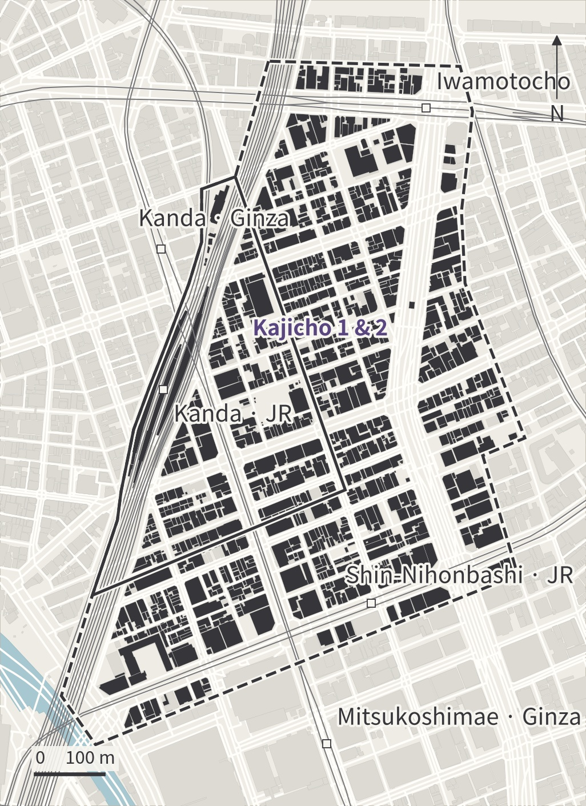

TOKYO / KANDA–NIHONBASHI
FIELD ATLAS / 01
Read the district
Study Kanda–Nihonbashi towards 2050, with Kajicho 1 & 2 as the detailed primary area in the official brief.
Explore the site atlas →Urban Design Studio 2026 · Theme B · 2026.10.18

STUDY AREA
The official brief’s study areas
Retain Figure 5’s solid primary and dashed approximate secondary outlines. No inferred block or poster boundary is used.
CONTEXT
Documents into design decisions
Read each document as a short chain: source requirement, local check and design action.
Loading the sources…
Legal rules, policy goals and site observations serve different purposes. Check road access, effective floor-area limits and approvals for each parcel.
DISTRICT IN NUMBERS
Density, use and hazards
Each measure uses the study area or names its independent source unit.
SITE MAPPING
One view, nine themes
Each theme shows both Figure 5 outlines in the same view. POI functions, building data and source dates are linked below.
Solid: Kajicho primary area. Dashed: approximate Kanda–Nihonbashi wider area. Both follow the official brief Figure 5.
NEXT STUDIES
Prepare the next simulations
Keep the project boundary fixed, then choose the question, pilot and model inputs.
DESIGN AGENDA
From reading to action
Use site evidence to select a pilot street and building group. Three work areas share the maps and define actions, measures and delivery conditions.
Simulation update: fix the geometry, choose a pilot and screen the computational domain before new cases.
SHARED KNOWLEDGE
Research review
A shared basis for interdisciplinary discussion.
THE SHARED DESK
Bring it to the table
Get the complete folder, open the shared QGIS project, then choose a field or source task. Keep dated versions of originals, observations and design outputs.
Drive, GitHub and Site retain their existing access settings. Team members need access to each service.